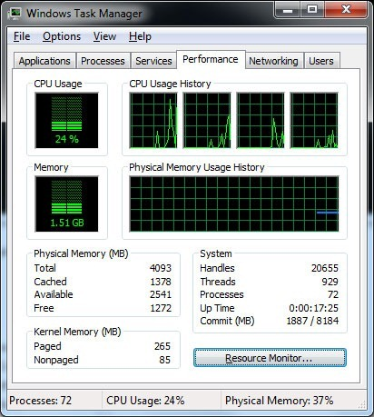
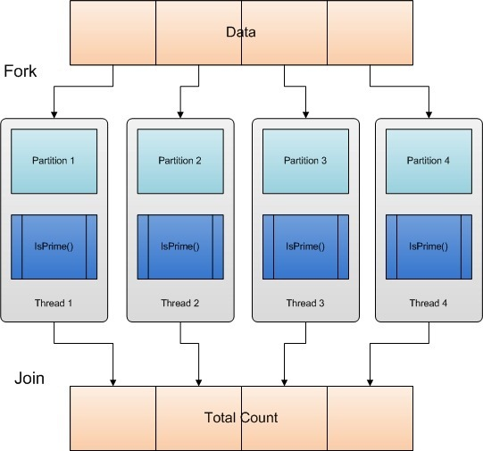
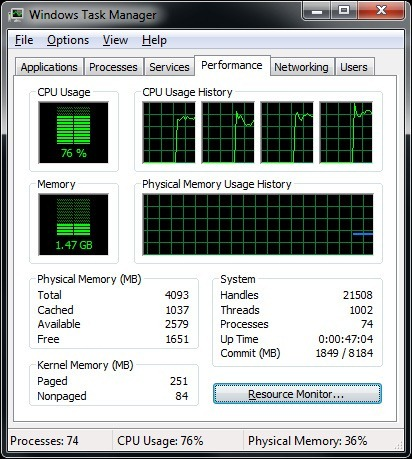
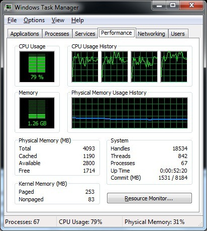
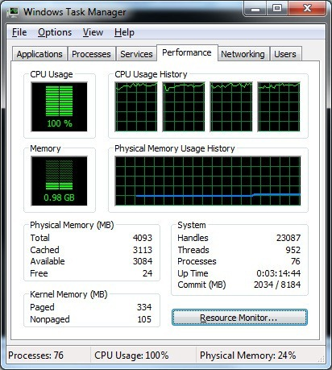
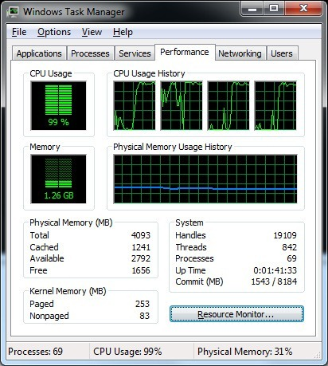
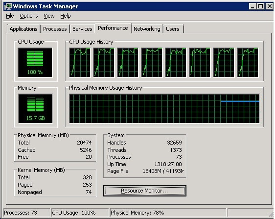

In .NET 4.0 Microsoft have introduced a slew of support for parallel programming. Parallel programming is not something you can ignore any more since CPUs are not getting any faster but instead the number of cores per CPU is increasing and unless we as software engineers begin to use all cores available on a given machine our software is not going to get any faster.
There was a time when multiple CPUs were only available on servers and server side application platforms such as IIS are inherently multi-threaded so if we were building an ISAPI or ASP.NET application we automatically got the benefit of multiple threads in our applications without the need to know how to write parallel programs in order to make the best use of server hardware.
On the client side, we typically used multiple threads to perform some background work so as to not freeze the UI. But very rarely did we spawn threads in client application to perform some compute-bound work, because for the most part, client machines had only one CPU and one core. But that has changed. Most desktop computers have at least 2 cores and in the future even normal desktop machines will have 4-8 cores and we need to learn how to utilize these cores in order to speed up our applications and to make good use of the available hardware.
Even in server side applications, it is important to know how to best utilize the hardware available in order to speed up our applications. If the CPU cores on your server are not busy and your application is not running as fast as it should then it is likely we could benefit from parallelizing some of the work we do in our application.
Parallel programming is extremely difficult to get right. I don’t mean getting it to work, but rather to get it right. It requires an in-depth knowledge of various hardware components such as CPU and CPU Architecture, Memory and memory architecture (UMA/NUMA), and the Disk I/O subsystem.
In this article, we’re not going to go into the details of hardware, though if you’re serious about parallel programming you should dig real deep into hardware architecture of modern computers, especially as it relates to Memory access, including L1, L2, L3 cache and the Disk I/O subsystem.
Compute Bound and I/O Bound
Compute-Bound: or CPU bound, is the term used in computer science for when the time taken for a process to complete is predominantly determined by the speed of the CPUs. That is the process is computationally intensive and increasing the CPU speed or the number of CPU/Cores will decrease the time it takes for a process to complete.
I/O Bound: An I/O bound task is one that relies on either Network I/O (reading data from across the Internet) or disk I/O (reading files or data from a database) and the bottleneck is not the CPU or memory. So effectively, the CPU is waiting on the I/O subsystem more often than it is doing any processing. I/O bound could also mean reading and writing to and from main memory.
Parallelization support in .NET 4.0
In .NET 4.0 we have access to a few specialized classes/libraries that can help us very easily achieve parallelization. In this post we'll be looking at the following:
- PLINQ (Parallel LINQ)
- The Parallel class. Namely the Parallel.For method
Both of these classes make it extremely simple to parallelize new and even existing code. We'll look at these two later in the post, but I wanted to introduce them and to assure you that stuff is simple. But like with most things, one needs to have a really good understanding of the background or foundations in order to best utilize the tools available. So in this post I attempt to introduce you to some of the foundational concepts with examples.
A big change in .NET 4.0 is the CLR thread pool. There have been some major overhauls to the thread pool in .NET 4.0 to support parallel workloads and of course PLINQ and the Parallel class (as well as the new Task class that's part of the TPL – Task Parallel Library) make good use of these changes. A key change is the introduction on Work Stealing. We'll talk about work stealing later in this post as it makes a huge difference to the performance of some parallel workloads.
Data Parallelism
Data Parallelism is a parallelization pattern. This is, it is commonly used and is therefore considered a pattern. It is also called SIMD (Single Instruction Multiple Data). What this means is that given a set of data you want to perform a certain function on it. A very simple example of is a typical for-loop where within the loop you perform some action on this data.
Task parallelism is another parallelization pattern that is commonly used. You use Task parallelization when you have a bunch of tasks that need to be performed on a piece of data and typically (or ideally) the order in which these tasks are performed is not important. I plan to write a post on Task Parallelism soon.
In this post I’d like to present Data Parallelism and how we can very easily start to use this pattern in our .NET applications for compute-bound work. A lot of what we do in application programming is a good candidate for data parallelism. In Code Listing 1 below we see a simple for-loop, that iterates over an array of integers. Within the loop we determine if the array element is a prime number. If it is, we increment a count. When the loop finishes, we have our answer, which is, the number of prime numbers in a given array of integers. The IsPrime() method is a compute-bound method.
Non-Parallel version of GetNumberOfPrimes
private static void GetNumberOfPrimes(int[] numbers) { var count = 0; for (int i = 0; i < numbers.Length; i++) { if (IsPrime(numbers[i])) count++; } //Console.WriteLine(count); } public static bool IsPrime(int number) { if ((number & 1) == 0) return (number != 2) ? false : true; for (int i = 3; i * i <= number; i += 2) { if (number % i == 0) return false; } return number != 1; }
Code Listing 1: Showing the Non-Parallel GetNumberOfPrimes method and the IsPrime method
Parallelizing the IsPrime() method
Of course a good candidate for parallelization is theIsPrime() method. However, in this post, I wanted to show you how you could Data Parallelize existing operations very simply and the IsPrime() method serves purely as a "compute bound" work load we'll be using here to simulate some operation over data you have in your applications. For the moment let's stick with the non-parallelized method GetNumberOfPrimes()shown in Code Listing 1 above and the initialization code in the Main method shown in Code Listing 2 below.
Initialization in the Main method
static void Main(string[] args) { var numbers = Enumerable.Range(1, 500000).ToArray(); var iterations = 500; Benchmarker.MeasureExecutionTime("Non-Parallel", iterations, () => GetNumberOfPrimes(numbers)); Benchmarker.MeasureExecutionTime("Plinq", iterations, () => GetNumberOfPrimesUsingPLinq(numbers)); Benchmarker.MeasureExecutionTime("QueueUserWorkItem", iterations, () => GetNumberOfPrimesUsingThreadPool(numbers)); Benchmarker.MeasureExecutionTime("Parallel.For", iterations, () => GetNumberOfPrimesUsingParallelFor(numbers)); Console.ReadLine(); }
Code Listing 2: Showing the Initialization method
At the very beginning, you'll notice that the numbers int[] is being initialized to integers from 1-500,000. That is we want to see how many numbers between 1 and 500,000 are prime numbers. We run each method 500 times because we're doing some performance benchmarking and so the average time across the 500 runs will give us a good reference for how long each method takes to do the job.
What we see below is the result of running the GetNumberOfPrimes() (single threaded) method.
---------------------------------
Non-Parallel
Total time : 62920.7195ms
Average time: 125.8414ms
Min time : 125.2776ms
Max time : 130.5586ms
---------------------------------
The average time was 125.3 milliseconds. What's more interesting is what you see in Image 1 below. I'm running this on a quad core machine. so 25% utilization on a quad core CPU equates to 1 core being used 100%. It is a tight loop so 100% utilization is expected. However, we're only using 1 of the 4 cores available to us.
Typically, when we parallelize, we want to see all CPU cores saturated. That is all cores are utilized 100% for the duration of processing. That indicates 2 things:
1. The work we're doing is being done as fast as possible on the current hardware
2. More importantly, if we were to throw more cores at the machine the work will be done sooner.
This is the ideal. But very rarely do we achieve this ideal and in production environments we have to take into consideration other software that's running on the hardware. Nonetheless if the job needs to be done, it will be done faster if the cores being utilized are saturated. So you may decide that it's ok to saturate all cores for a shorter period of time, than to saturate fewer cores for a longer period of time.

Image 1: Showing that the non-parallelized method uses only 1 core
Now let's talk about what Data Parallelization is and how we'd use it in this context. Basically, the "data" is partitioned. That is the data is split into multiple partitions and each partition of data is executed on a different thread. Within a loop inside the thread we call our method (in this case IsPrime()) passing it the "data. Remember SIMD? Single Instruction multiple data. Does that make sense now? The single instruction is the IsPrime() method. The multiple data is the partitioned data.

Image 2: Data Parallelization – Partitioning data and processing each partition in a thread
Since we're working with an array the easiest way to partition our data is to break it up into smaller partitions. How many partitions? Well, since we have 4 cores (in this case) we could partition the data into 4 equal parts and then spawn 4 threads and pass each one a partition. This technique is called Range Partitioning. Range partitioning is by far the simplest algorithm one can use to partition data. As you'll see later in this post the partitioning algorithm is a key component of data parallelization and the best algorithm to use depends largely on the data and the function you perform on this data.
When using PLINQ or the Parallel class we don't have to do the partitioning ourselves (Whew!). More about PLINQ and Parallel class partitioning algorithms later.
I mentioned 4 partitions because we have 4 cores. Without going into details, remember that normally you may double up on the partitions and threads. That is 8 partitions and 8 threads. but it all depends on the data, the partitioning logic, hardware in use and the existing workload (other applications that share the hardware etc.).
We'll be looking at 3 parallelized implementations that do the same job (count the number of prime numbers in our int[] numbers) using different techniques.
- PLINQ
- Parallel.For
- QueueUserWorkItem
The QueueUserWorkItem implementation does not require .NET 4.0 and in fact is something you can do using earlier versions of .NET including .NET 2.0. It's implementation is fairly complex so what I hope to impart in this post is that with the support for parallelization introduced in .NET 4.0 (especially Data Parallelization and Task Parallelization) it behooves us to use these capabilities in our software so we make good use of the hardware our software is running on.
PLINQ
As I mentioned before, with PLINQ we don't have to concern ourselves with partitioning or threads, PLINQ handles it all for us. All you have to do (for the most part) is call the .AsParallel() method on the IEnumerable! That is to say that the only difference between the non-parallel LINQ version and the parallel PLINQ version is the .AsParallel() method call. Couldn't be any simpler!
This gives us a lot of opportunities to parallelize our code where possible. Just don't go about blindly adding the .AsParallel() call to all LINQ to object queries! They won't all work and not all LINQ queries will benefit from being parallelized.
Behind the scenes PLINQ will use one of many partitioning algorithms depending on various criteria. (We can also provide our own partitioning algorithm implementation but for the most part that's not required and not covered in this post). I won't go into the details of how PLINQ makes these decisions in this post but the following are the algorithms that could be used
- Range Partitioning
- Chunk Partitioning
- Stripe Partitioning
- Hash Partitioning
With simple queries PLINQ will spawn multiple threads (normally equaling the number of cores on the system) to get the job done. A lot of the algorithms PLINQ uses in order to get the results of queries require cross thread communication. This could slow things down a bit (depending on the query and data). In some cases the algorithm could require PLINQ to wait for all threads to finish while in other cases it may not. Any way this is not stuff you need to be concerned about. And indeed, you don't need to know the inner workings of PLINQ in order to use it.
The method that uses Plinq. Notice the AsParallel()
private static void GetNumberOfPrimesUsingPLinq(int[] numbers) { var query = from n in numbers.AsParallel() where IsPrime(n) select n; var count = query.Count(); //Console.WriteLine(count); }
Code Listing 3: Showing a method using Plinq
Parallel.For
Using Parallel.For we don't have to concern ourselves with data partitioning or threads either and link with PLINQ we could provide our own partitioning algorithm if we wanted to as well.
Parallel.For uses combinations of partitioning algorithms (dynamic partitioning) depending on the data and other workloads on the system. It could start with Range Partitioning and change to range/work stealing (explained later). Again, we don't need to know the inner workings in order to use this class.
The Parallel.For method has a number of overloads. For most tasks, you can use the simplest (to use) overload that essentially works like a regular for-loop. The method signature for this method looks like this:
Parallel.For method signature for the simplest overload
public static ParallelLoopResult For(int fromInclusive, int toExclusive, Action<int> body);
To implement the functionality we require in this case the code would look like this:
Parallel.For implementation using the simplest overload
private static void GetNumberOfPrimesUsingParallelForSharedState(int[] numbers) { var total = 0; Parallel.For(0, numbers.Length,(j, loopState) => { if (IsPrime(numbers[j])) Interlocked.Add(ref total, 1); }); //Console.WriteLine("Parallel.For - # Of Primes: " + total); }
This code works and is really simple to understand. But it is not as performant as another alternative. So let's understand the problem with this code and see what other alternatives the Parallel class has to offer.
Notice (in the code listing above) that we have a single variable called total. Next, in the parallel loop, if the number in question is a prime number we need to increment the value of total. But because the code within the loop is running in parallel (on multiple threads), we need to serialize access to the total variable because it is shared by multiple threads. That is we need to ensure that only one thread writes to (or reads from) this variable at any time. And so, we use the Interlocked class to increment the value of the total variable. The Interlocked class provides us with many methods that are atomic (meaning that they are performed in their entirety or not at all) and thread safe. Worst case scenario is that during each iteration, when a thread needs to increment the count of the total variable, all other threads are blocked. This could hurt performance terribly in other situations but no so in our situation because not all numbers are prime.
But what if the tasks you want to perform in the real world is such that the result of each task has to be written to a variable that is shared by all threads (shared state)? That's the worst case scenario for the above code. So in this post we will concentrate on another overload of the Parallel.For method how we would implement this method. It is a bit complex and unfortunately not the most intuitive either but I'll do my best to explain the parameters about the implementation.
Parallel.For Thread-local state
So we know we don't want to use shared state. So we could use thread-local state (that is a variable that is local to each thread and somehow at the end of each loop if we could add up all of the results, we'd have our answer. The .NET team has given us this capability in the Parallel class as another overload of the For method. Let's take a look at the signature of this overload and try and understand what each of the parameters mean and how we'd use them.
Parallel.For method overload for Thread-Local variables
public static ParallelLoopResult For<TLocal>(int fromInclusive, int toExclusive, Func<TLocal> localInit, Func<int, ParallelLoopState, TLocal, TLocal> body, Action<TLocal> localFinally);
The first two parameters are the same, so no problem there. The third parameter
localInit: Is a Func delegate that returns the initial state of the local data for each thread. In other words a method that returns the initial value of the thread local data (or local state). "Local state" in this context means a variable whose lifetime extends from just prior to the first iteration of the loop on the current thread, to just after the last iteration. In our case our local state is a variable of type int and it's initial state needs to be zero (for all threads).
body: This is a Func delegate for the body of our loop that is invoked once per iteration. The first parameter to this method is our loop increment counter (same as the other method overload), the second parameter is a type ParallelLoopState (let's not worry about this parameter since we're not using it here. The third parameter is the local state. So in other words, we're passed in this parameter (so we have the current state it is in, we can do what we need to do with it (in this case increment it is the number is a prime number). The last parameter (as per the typicaly Func delegate convention is the return type. So we return the local state at the end of each iteration. so it can be given back to us in the next iteration.
localFinally: The Action delegate that performs a final action on the local state of each thread. This is where you define the method that will be called once, after all the iterations on this thread have completed. The parameter this method provides us is none other than our thread-local state, so basically, this is where we get the opportunity to add up all of the thread-local variables into a variable that holds our final result.
Make sense? If this doesn't make sense now, it probably will when you see our implementation using this overload (you'll be able to join the dots). Our implementation of this overload is shown in Code Listing 4 below.
private static void GetNumberOfPrimesUsingParallelFor(int[] numbers) { var total = 0; Parallel.For(0, numbers.Length, () => 0, (j, loopState, subtotal) => { if (IsPrime(numbers[j])) subtotal++; return subtotal; }, (x) => Interlocked.Add(ref total, x) ); //Console.WriteLine(total); }
Code Listing 4: Showing a method using Parallel.For with Thread-Local state
Looking at Code Listing 4 above, our 3rd parameter (localInit) is a lamba function that gets no parameters and returns the initial state of our local state (which is zero). The body parameter (the 4th parameter) is a Func delegate that passes in 3 parameters and expects a return parameter of type int. j is our loop counter, we don't use loopState in this example and subTotal is the loop state variable that holds the count of prime numbers of each thread. It is passed in as a parameter, we increment it in the body of our loop and return it in each iteration (so it can be passed in to us in the next iteration). The 5th parameter (localFinally) is an Action delegate that passes in one parameter, our local state. It is implemented as a lambda here, where x is the parameter that is our local state and we need to increment our total variable with this value. But here, because we're now dealing with shared state, we use the Interlocked class again. But keep in mind that in this case the localFinally action delegate is called once at the end of each thread's execution. So we're only blocking other threads once, at the end of each thread's execution rather than once during each iteration.
So in other words, using thread-local data, we can avoid the overhead of serializing a large number of accesses to shared state. Instead of writing to a shared resource on each iteration, we compute and store the value until all iterations for the task are complete.
Performance Results
Let's look at some performance numbers now. Here are the timing results of the various implementations.
---------------------------------
Plinq
Total time : 20860.5636ms
Average time: 41.7211ms
Min time : 41.5165ms
Max time : 62.3814ms
---------------------------------
---------------------------------
QueueUserWorkItem
Total time : 20107.1865ms
Average time: 40.2143ms
Min time : 39.9199ms
Max time : 58.2553ms
---------------------------------
---------------------------------
Parallel.For
Total time : 16517.1344ms
Average time: 33.0342ms
Min time : 32.5172ms
Max time : 37.0311ms
---------------------------------
From the performance numbers we see above, the method that uses Parallel.For performs the best. The method that uses QueueUserWorkItem comes in at 2nd place, while the Plinq method comes in at 3rd place. These numbers could change depending on the workload, data as well as the hardware architecture on which you run this code. We'll examine another case later in this post where the data (or the arrangement of data) makes a difference to the outcome.
However, let's not loose sight of the point of this post and that is to make use of and to benefit from parallelization of either existing or new code. Any one of these methods is almost 4 times faster than the original method. 4 times faster because I'm running this on a 4 core machine. If I was to run this on an 8 core machine they would all be almost 8 times faster.
The Plinq implementation does not saturate all cores as you can see in the CPU utilization screen shot below. There is a reason for this and we'll talk about this later in the post. Over the duration of processing the CPU utilization fluctuated between 74% and 76% but stayed mostly at 76%. So I've shown you 76% here. The same goes with the other CPU utilization screen shots you see later.

Image 3: Plinq CPU Utilization – all cores, but not 100% saturation
In the next image we see the CPU utilization of the method that uses QueueUserWorkItem to queue multiple worker threads on the thread pool, each with it's own partition of data. As you can see here, the CPU utilization is slightly higher (consistently) showing that the parallelization implementation makes better use of the hardware available to us.

Image 4: QueueUserWorkItem CPU Utilization almost 100% saturation
The next image shows the CPU utilization of the Parallel.For method. Here we see that all cores are 100% saturated (almost all the time). So it looks like the Parallel.For method does the best job of utilizing all of the available hardware.
That's the nature of parallel computing. There are a lot of variations possible and way too many factors that will impact the outcome. So what I want you to keep in mind is that there is no one method that will always outperform any other. It depends largely on the data and and kind of processing (the prime number algorithm used in case) and how well each of the methods manage threads, memory I/O and minimizes the cost of overheads as well as the hardware architecture of the system (as mentioned earlier).

Image 5: Parallel.For CPU Utilization showing 100% saturation
Data Partitioning is Important
So why is the data partitioning algorithm important? In this case it is extremely important and it has to do with the way the IsPrime() method is implemented. You see in order to determine if a given number is a prime number or not, we iterate from 3 up to the square of the number to see if the number is wholly divisible by any of those numbers. As the number gets larger we have to iterate over more numbers and check against each of those numbers to determine if the number is a prime number or not. So effectively, larger numbers will take longer to determine and since our initial int[] is an ordered sequence of numbers from 1-500,000 the last partition has the largest numbers and processing the last partition will take the longest to process and processing the second to last partition will take a little less time and so on.
If that part is clear, then you'll realize that the way we're partitioning the data is kind of unfair, in that the thread that gets the first partition will finish before the thread that gets the last partition since the data in the last partition contains larger numbers. So how we partition our data plays an important role in how performant our parallelization is.
But it's not so much about being unfair but rather about underutilization of hardware. You see when the first thread finishes, it sits there doing nothing until the other threads complete their workload. Then the second thread finishes and waits for the other two to finish. As a result, the cores are not 100% saturated. That's not good.
Work Stealing And Dynamic Data Partitioning
So then how come the method that uses Parallel.For seems to not be affected by the unbalanced data partitioning? What's not quite apparent is that because of the new features built into the CLR Thread Pool, namely work stealing and dynamic data partitioning, the method that uses Parallel.For outperforms all the others even though the data partitioning is not ideal, because when thread 1 finishes it's work load, it starts to steal work from the other threads, when thread 2 finishes it's workload it starts to steal from the other threads as well. So effectively all threads are busy all of the time giving us 100% or close to 100% saturation of cores.
So the clear lesson here is that the .NET implementation of Parallel.For is highly optimized and behind the scenes the CLR thread pool is able to employ the new work stealing feature (using the Hill Climbing heuristic where the aim is to keep all cores busy). The Parallel.For method (a few of the other overloads) allows you to control or define the data partitioning that should be used as well. But here we're just letting it do whatever it does by default.
It should be noted that the new features of the thread pool are used by the Parallel class, Plinq as well as Tasks (all introduced in .NET 4.0). ThreadPool.QueueUserWorkItem does not utilize these new features because the way these features are implemented would likely break legacy code and since QueueUserWorkItem has been around since .NET 1.1 the team at Microsoft decided to make it an "opt-in" feature and you opt-in by simply using the new features in .NET 4.0.
In order to fix our data partitioning all we need to do is order the integers in the array randomly. Of course bear in mind that working with real world data is very different and balancing your data partitions may not be that simple or possible or may not be required at all. It just depends on what you're doing with your data.
The code below shows a simple way to randomly sort our int[] of numbers between 1-500,000.
var rnd = new Random(); var numbers = Enumerable.Range(1, 500000) .OrderBy(r => rnd.Next()) .ToArray();
Let's see if this change has any impact on our benchmarks.
---------------------------------
Plinq
Total time : 16712.8642ms
Average time: 33.4257ms
Min time : 33.1166ms
Max time : 37.4965ms
---------------------------------
---------------------------------
QueueUserWorkItem
Total time : 16080.1191ms
Average time: 32.1602ms
Min time : 31.7991ms
Max time : 48.0894ms
---------------------------------
---------------------------------
Parallel.For
Total time : 16497.6999ms
Average time: 32.9953ms
Min time : 32.7595ms
Max time : 35.3307ms
---------------------------------
Compared to the earlier results each of the algorithms has improved by about 3-4%. The method that uses QueUserWorkItem comes in at the 1st place and next is the Parallel.For and in 3rd place is Plinq.
The Plinq and QueueUserWorkItem method both showed CPU utilizations of about 99% as shown below, while the Parallel.For method remained close to 100% through the duration (probably due to thread management and other overhead reasons).
Please take note that this example (and the data) is very simplistic and in the real world, with real data the Parallel.For method will almost always outperform the other approaches. The thread pool with its work stealing, hill climbing heuristic, dynamic data partitioning and awareness of what other applications/processes are currently running on the hardware has a lot more information and capabilities than our simplistic (almost naïve) implementation of the method that uses QueueUserWorkItem.

If you take a look at the implementation of method that uses QueueUserWorkItem in Code Listing 5 below, you'll see that there is a lot going on here. But also notice that we determine the number of threads to spawn based on the number of Cores available (but we don't take into account the workload already present on the hardware). So this method should scale just as well as the other methods presented in this post. But is the complexity of the implementation worth the gains? And remember every workload is different and there might be more complexity involved that will make your implementations more complex as well. So I highly recommend using Plinq and/or the Parallel class' Parallel.For or Parallel.ForEach methods and let the underlying framework do the optimizations for you while you keep you code simple and easy to understand and maintain.
Implementation of a method that uses QueueUserWorkItem
private static void GetNumberOfPrimesUsingThreadPool(int[] numbers) { var noOfPrimes = 0; var coreCount = Environment.ProcessorCount; var batchSize = numbers.Length / coreCount; var pending = coreCount; using (var mre = new ManualResetEvent(false)) { for (int batchCount = 0; batchCount < coreCount; batchCount++) { var lower = batchCount * batchSize; var upper = (batchCount == coreCount - 1) ? numbers.Length : lower + batchSize; ThreadPool.QueueUserWorkItem(st => { var count = 0; for (int i = lower; i < upper; i++) if (IsPrime(numbers[i])) count++; Interlocked.Add(ref noOfPrimes, count); if (Interlocked.Decrement(ref pending) == 0) mre.Set(); }); } mre.WaitOne(); } //Console.WriteLine(noOfPrimes); }
8 Core Machine
I ran the application on an 8 core machine. That's 2 CPUs with 4 cores each. Keep in mind that a single CPU with 8 cores will perform better than 2 CPUs with 4 cores each. That's because memory access is extremely slow as compared to CPU speed and if all cores can get the data they need (including the work stealing) from the same chip (L1, L2 cache) rather than having to make trips to main memory or in the case of work stealing, having to steal from work that's on a different chip altogether, things will slow down a bit. I should add that the CLR Thread pool's work stealing algorithms do account for this and optimize accordingly.
The benchmark timings and CPU utilization is shown below
---------------------------------
Plinq
Total time : 4023.2581ms
Average time: 8.0465ms
Min time : 6.8322ms
Max time : 10.0536ms
---------------------------------
---------------------------------
QueueUserWorkItem
Total time : 3658.2514ms
Average time: 7.3165ms
Min time : 6.3065ms
Max time : 9.6705ms
---------------------------------
---------------------------------
Parallel.For
Total time : 3508.3063ms
Average time: 7.0166ms
Min time : 6.0755ms
Max time : 9.5767ms
---------------------------------
